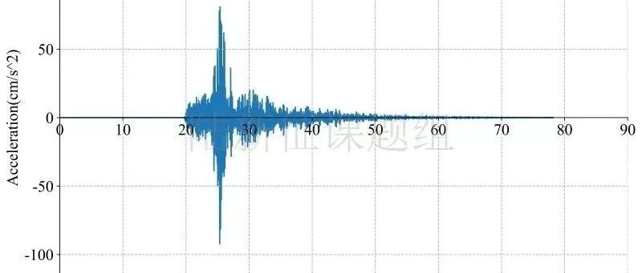

RED-ACT: 10月28日甘肃甘南州夏县5.7级地震破坏力分析
致谢和声明：
感谢中国地震台网中心为本研究提供数据支持。本分析仅供科研使用，具体灾情和灾损分析应根据现场调查情况确定。
一、地震情况简介
据中国地震台网正式测定，10月28日1时56分在甘肃甘南州夏河县发生5.7级地震，震源深度10千米，震中位于北纬35.10度，东经102.69度。
二、强震记录及分析
20191028甘肃甘南州夏河县5.7级地震获得了5组地震动，由于地震动没有完全收集，可能还有更强的记录。典型地震记录分析如下：
62BLX记录台站位置北纬34.83度，东经102.84度，记录到水平向地震动峰值加速度为92.2cm/s/s。该地震动如图1、图2所示（目前拿到数据如此，我们觉得可能还要进一步确认）。


图1 62BLX台站地面运动记录

三、地震动对典型城市区域破坏能力分析
利用密布强震台网在震后获取的实时地震动信息，再结合城市抗震弹塑性分析，就可以得到地震发生后不同地点的建筑破坏情况，为抗震救灾决策提供科学支撑。图3为根据20191028甘肃甘南州夏河县5.7级地震震中附近范围内台站记录分析得到的建筑震害分布示意图。图4为根据 20191028甘肃甘南州夏河县5.7级地震震中附近范围内台站记录分析得到的人员加速度感受分布示意图。

（建筑抗震承载力取均值）

（建筑抗震承载力取均值）
四、台站附近地震滑坡分析
根据当地地形数据、岩性数据和实测地面运动记录，可以计算得到不同滑坡体饱和比例下的滑坡分布，如图5所示。其中，底图为当地坡度分布图，每个圆圈代表每个台站的计算结果，圆圈中的数字代表发生滑坡的临界坡度，台站附近坡度大于该数值的地方滑坡发生概率高。


图5 不同台站附近地震滑坡分布
五、地震动对典型单体结构破坏能力分析
(1) 对典型多层框架结构破坏作用
模型1：三层框架结构（感谢中国建筑设计研究院王奇教授级高工提供模型）
将62BLX台站记录输入立面布置如图6(a)所示的6度、7度和8度设防的典型三层钢筋混凝土框架结构，得到其层间位移角包络如图6(b)所示。


(a) 立面布置示意图
(b) 层间位移角
图6 典型三层钢筋混凝土框架结构
(2) 对典型砌体结构破坏作用
模型1：单层未设防砌体结构
选取图7所示纪晓东等开展的单层未设防砌体结构振动台试验模型，输入62BLX台站记录，分析结果表明该结构将处于轻微破坏状态。（纪晓东等，北京市既有农村住宅砖木结构加固前后振动台试验研究，建筑结构学报，2012,11,53-61.）

图7 单层三开间农村住宅砖木结构振动台试验
模型2：五层简易砌体结构
选取图8所示朱伯龙等开展的五层简易砌体结构足尺试验模型，输入62BLX台站记录，分析结果表明该结构都将处于完好状态。（朱伯龙等，上海五层砌块试验楼抗震能力分析，同济大学学报，1981,4,7-14.）


(a) 平面图
(b) 剖面图
图8 五层简易砌体结构布置
(3) 对典型桥梁破坏作用
模型1：某80年代公路桥梁（感谢福州大学谷音教授提供模型）
选取图9所示某80年代公路桥梁模型，输入62BLX台站记录，分析结果表明该结构都将处于完好状态。

图9 某80年代公路桥梁模型
模型2：某特大桥引桥（感谢福州大学谷音教授提供模型）
选取图10所示某特大桥引桥模型，输入62BLX台站记录，分析结果表明该结构都将处于完好状态。

图10 某特大桥引桥模型

---End---
相关研究
长按识别二维码，关注我们的科研动态